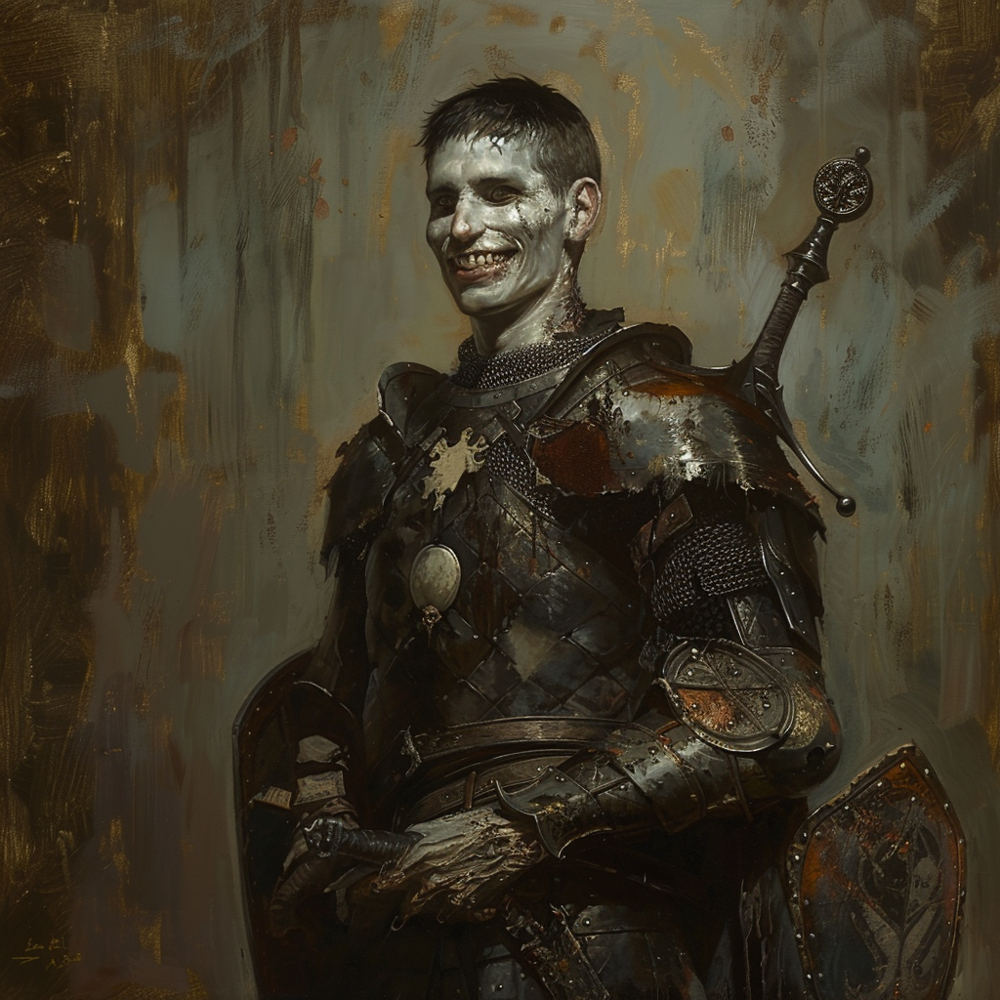

|  |
Sieur Arthund BoarwinArthund Boarwin, bien qu'ayant péri avant d'atteindre la chevalerie, avait le cœur d'un vrai combattant. Mort en jeune écuyer lors de la bataille des collines de Balinok, il n'avait pas encore réalisé son vœu de terrasser une créature maléfique. Aujourd'hui mort-vivant, Arthund nous a confié qu'il aimerait poursuivre sa quête et prouver sa valeur en tant que chevalier, même après sa mort. |